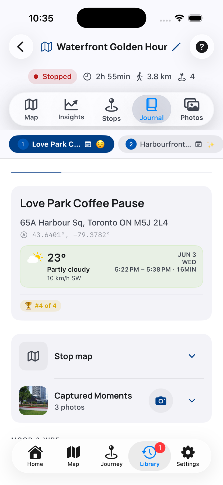
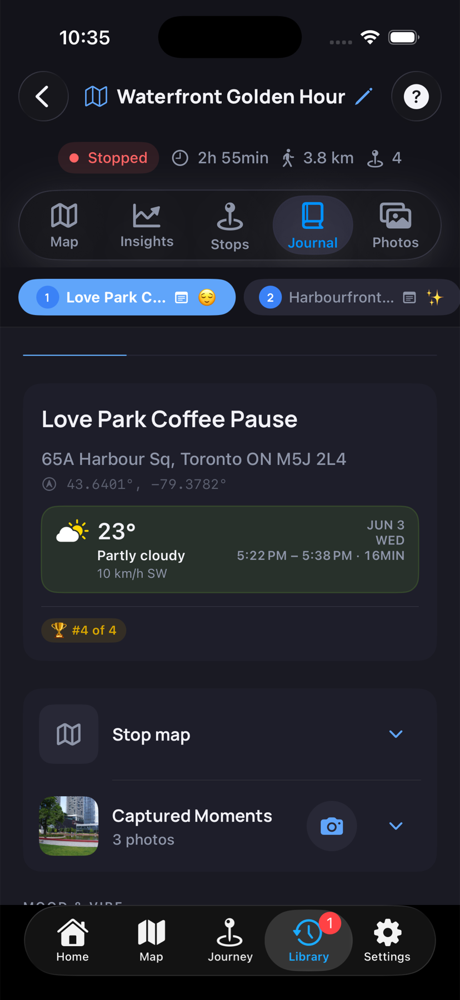

Move between stops while keeping journal context visible.
Journal Help
Add the memory behind each stop.
Journal brings together stop timing, mood, map context, and notes so a place becomes easier to remember later.


What You Can See Here
Show the place on the route when the location matters.
Save a mood and emoji tags that describe the stop.
Write or refine the note that explains why the stop mattered.
Write Journal Notes
Keep notes close to the stop they describe.
Use Journal when a place needs more meaning than a title, timestamp, or photo can capture.
1Choose a stop
Use the stop chips to switch between places in the journey.
2Confirm the context
Review time, weather, mood rank, and map context before editing.
3Add mood details
Use mood and vibe tags to describe how the stop felt.
4Write the note
Add the short memory that should travel with this stop in future views and exports.
Questions
Common Journal questions
Do I need to write every stop?
No. Add notes only where they make the journey easier to remember.
Can I change the mood?
Yes. Mood and vibe tags are meant to be adjusted when you review the journey.
Will notes be exported?
Notes may be included in sharing and export flows, depending on the format you choose.